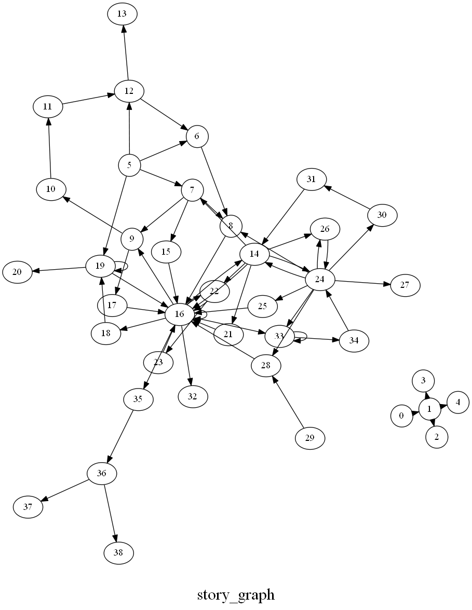

В данной заметке изложен прототип идеи поиска связанности текстовых фрагментов на основе структуры повествования.
Данные для исследования
В качестве данных будет использоваться совместная работа Ю.Е. Березкина, Е.Н. Дувакина «Тематическая классификация и распределение фольклорно-мифологических мотивов по ареалам». В каталоге содержатся обобщенные тексты, категоризированные по различным признакам.
Идею рассмотрим на основе данного текста (приведен сокращенно):
Монтанья. Амуэша: Santos-Granero 1991, № 3 [во времена древнего солнца Yompor Pret женщины рожали гнилое дерево, ящериц или волосатых обезьян; жрец велел воспитывать брата с сестрой в особом доме; пойдя за водой, сестра нашла два цветка, спрятала на теле, забеременела; жрец признал, что это случилось по воле верховного бога, … близнецы прыгнули за озеро, сделали мост из лиан; ягуары пошли по нему, те его обрушили, спаслась одна беременная ягуариха; близнецы стали взрослыми, поднялись на небо, брат стал Солнцем, сестра - Луной]
Весть препроцессинг, который касается данной статьи, опубликован в этой тетрадке на github.
Проблема данных и задача
Тексты не относятся ни к точным ни, к адаптированным переводам. По сути они представляют из себя русскоязычное изложение сюжета оригинальных историй, записанных со слов носителей языка в разные исторические периоды и разными исследователями. Авторы ставят задачу поиска общностей, связывающих между собой разные группы текстов.
Проблемы данных:
-
неточность перевода
-
сокращения терминов в тексте
-
краткое изложение
-
переосмысление текста и адаптация слов
-
ошибки и опечатки
-
использование множества терминов по отношению к одному субъекту/объекту
У меня возникла идея построить сюжетный граф для каждой истории и на основе метрик графов выявить структурные связи. Предположение заключается в том, что термины могут меняться при переносе из одного источника в другой или при переводе, а сюжетная структура сохраняется.
Модель для исследования
Походив туда-сюда и поковыряв вручную текст у меня получился такой сюжетный граф:

В качестве тестовой модели построения графа были выбраны следующие правила:
-
в тексте есть субъекты (‘древнеe солнце’, ‘женщины’) и объекты (‘вода’, ‘два цветка’)
-
субьекты совершают действия по отношению к субъектам или объектам (‘близнецы стали взрослыми, поднялись на небо, брат стал Солнцем, сестра - Луной’)
-
субъекты совершают действия по отношению к субъектам через объекты или другие субъекты (‘жрец велел воспитывать брата с сестрой в особом доме’)
-
субъекты совершают действия без цели (‘близнецов поймали, но они не росли’)
Таким образом, нодами графа становятся субъекты и объекты, ребрами - действия, связывающие между собой ноды. При этом часть связей субъектов устанавливается через объекты, а некоторые связи образуют петли, так как не имеют цели. Граф можно построить как направленный, так и не направленный.
В построении такого графа имеет значения выбранные правила следования сюжету, а понимание текста во многом субъективно, поэтому то, что на картинке - это, скажем так, мое поверхностное представление развития сюжета в тестовой истории.
Что можно из этого извлечь
Аналитические метрики графов, по которым можно сравнивать различные истории, не привязываясь к семантике
Можно выделить различные внутренние структуры сюжетного графа, получить по ним метрики и найти подобия.
Рудименты, архаизмы, вводные части и другие несвязанные компоненты в сюжете (1). Ключевые субъекты и объекты и образуемые между ними структуры (2). Специфичные сюжетные структуры (3). Ну и т.д. Все это, даже при частичной потере семантической связи, может указывать на связность различных историй между собой, выявить как последовательный перенос сюжетов от истории к истории, так и горизонтальный обмен между разными историями.
Что нужно сделать дальше
-
Получить более чистые тексты
-
Формализовать объективные правила построения графа
-
Построить модель выявления нод для графа и получить список нод
-
Построить модель выявления действий, связывающих между собой ноды
-
Получить список вида ‘нода - действие - нода’
-
Выделить ключевые метрики для оценки графов
Пока всё.